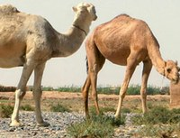

Camels نگهداری شتر
Content

Problems and Opportunities
- Priority problems for camels in Afghanistan include: diseases such as trypanosoma, rabies, camel pox, pasteurollosis, Brucellosis through milk contamination, and tuberculosis.
- Priority Opportunities include vaccinations, and heat treatment of milk.
- These draft priority problems are based on feedback from Afghan specialists and Rick Tucker.
Overview
- Overview Info Sheet (UCD)
- Humans and Brucellosis Fact Sheet (UCD)
- Afghanistan National Livestock Census 2006 Report (11 MB) (FAO)
Management of Camels
- Management in Pakistan Manual(UAF)
- Milk Management
- Milk Manual (FAO)
- Milk Processing Technologies for Small-Scale Producers Manual (1.6 MB) (ICARDA)
- Pasteurizing Milk Fact Sheet (UC Davis)
Diseases
- Disease Prevention (Biosecurity)
- Limiting Disease Spread Fact Sheet (SIU with UC Davis)
- From the Illustrated Manual of Infectious Diseases of Livestock In Afghanistan (Fort Valley State University):
- Common diseases affecting Camels
- Trypanosomosis Fact Sheet (caused by Trypanosoma evansi) (UAF)
- Mange Fact Sheet (OIE)
- Common diseases camels and may spread to humans:
- Tuberculosis B (caused by Mycobacterium bovis) Fact Sheet (OIE)
- Brucellosis Fact Sheet (caused by Brucella abortus or B melitensis)
- Contagious Ecthyma (also known as Orf) Fact Sheet (ISU)
- Rabies Fact Sheet (DCA)
- Other diseases:
- Camel Pox (UAF)
- Pasteurollosis (also known as hemorrhagic septicemia) Fact Sheet (FAO)
Pasture and Fodder
- Animals graze pastures in spring and summer, and are fed in the home compound during the lean feed periods of winter and early spring.
- Challenges to Grazing Land Info Sheet (UC Davis and SIU)
- Fodder
- Crop Options Fact Sheet (UC Davis, SIU and U Georgia)
- Tree Options Info Sheet (UC Davis from FAO)
- Alfalfa Role and Establishment Report (1.9 MB) (FAF Developments)
- Pasture/Forage Resources Profile Report (FAO)